Two console apps, one assessment
Plain Python with no third-party libraries. Each program validates input, makes decisions, and prints a clear report.
Student Scholarship Eligibility
Checks marks, attendance, and family income with if/elif, then lists every unmet requirement.
Smart Pharmacy Inventory & Sales
Loops over medicines, checks stock, totals revenue, and flags items that need restocking.
Scholarship decision flow
Full scholarship at 90% marks or more; partial from 80% to below 90%. All three requirements must pass.

Pharmacy processing loop
One pass through the loop per medicine, with revenue and restock counters updated each time.

Sample run charts
Revenue and remaining stock from the sample execution.

Data model
A conceptual ER diagram. The programs keep data in memory only.

Run the programs
Install Python 3.8 or newer, open a terminal in the project folder, and run either file.
python student_scholarship_system.py
python pharmacy_inventory_system.py